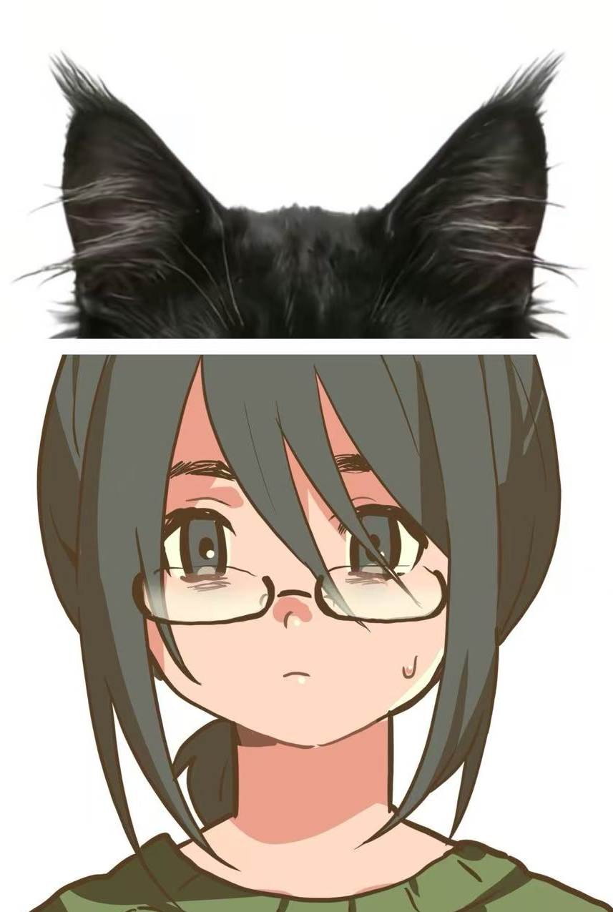

01｜基础资料
- 姓名：方莓
- 性别：女
- 年龄：25
- 职业：自由职业工作者
- 居住状态：独居
- 常见活动范围：住处、便利店、画室、画材店、线上工作平台米画师
- 作息状态：昼夜不稳定，夜间活跃度较高
- 社交状态：线下社交频率低，线上交流频率较高
- 精神状态：疑似长期焦虑，住处内存在相关药物包装，夜间服药频率稳定，睡前存在额外服药行为。具体药名另档记录。
1.1 外貌识别
- 头发：黑色中长发，长度至颈部附近，有刘海。
- 眼睛：黑色，常被镜片或刘海遮挡。
- 眼镜：黑框，长期佩戴。
- 面部特征：黑眼圈、痘印、雀斑。
- 体型：普通微胖，有小腹，腿部偏粗。
- 胎记：右侧臀部一处。
- 疤痕：手腕内侧存在数道泛白旧疤。
注：以上项目均具备稳定识别价值。记录对象本人评价偏低，不影响识别结果。
1.2 性格特征
- 社交表现：内向，有礼貌，面对外貌优越者时音量降低、视线回避频率上升。
- 社交敏感度：高。在人际关系中过于关注他人态度变化，对朋友认可存在明显需求。常通过过度解释、主动退让、提前迎合来降低被排斥奉献，但亦使对方产生压力感，是人际关系中遭遇反感、反复受挫的重要原因之一。
- 自我评价：偏低，且已形成稳定认知。
- 情感压迫耐受度：高。记录对象在遭遇朋友阴阳怪气、不公平对待及情绪性贬低后，常替对方寻找理由，并在短时间内回复关系。对情感霸凌的识别与反抗延迟明显，倾向于以忍耐、原谅、维持现状替代矛盾处理。
- 行动力：强，说到做到。
- 计划反应：不喜欢既定计划被打断。计划失效后，情绪波动明显。
- 亲密反应：面对直白情感表达时，常以玩笑、转移、沉默或否定处理。
- 防御方式：提前贬低自己，降低他人评价带来的影响。
1.3 兴趣偏好
- 颜色：绿色。
- 爱好：美少女手办、galgame、音游、画画、恐怖片、动画片。
- 动物：狗、海豹。
- 风格偏好：复古、古早。
- 内容偏好：情感扭曲类恋爱内容，擦边肌肉男相关内容。
- 食物：兴趣较高。情绪低落时，便利食品与高碳水购买频率上升。
1.4 建档理由
初次接触时，记录对象存在明显异常整理痕迹。开门前停顿时间偏长。衣领与发尾存在短时间内被整理过的痕迹。右手手腕内侧可见新鲜压痕，形状接近绳索勒痕。取餐时回避视线，右手向袖口内收。记录对象试图伪装为普通取餐状态。伪装能力一般。
初始结论：羞耻反应明确，欲望痕迹明确。观察价值：中等偏高。建档：通过。
02｜初始建档
- 阶段编号：008-A
- 阶段名称：未接触初筛
- 时间范围：第一次外送后至门框设备安装前
- 记录方式：外送接触观察，基础行为判断
- 记录人情感变量：无
第一次送达后，记录对象进入观察列表。记录对象不适合直接接近，记录对象对陌生男性存在回避倾向，过快推进会提高警惕。外卖员身份适合保留。
已确认内容：取餐时未见同住者活动痕迹，外卖份量多为单人份，外卖接收频率稳定，记录对象独居概率较高。取餐时礼貌程度偏高。欲望痕迹存在，且羞耻反应清晰。自我评价疑似偏低，面对注视时，记录对象优先遮挡自身，而非确认观察者意图。
阶段判断：适合继续观察。
03｜资料补全
- 阶段编号：008-B
- 阶段名称：非接触资料补全
- 时间范围：第二次外送后至第一次性关系前后
- 记录方式：门框摄像头，室内收音，屏幕内容
- 记录人情感变量：无
第二次送达后，门框处完成微型摄像设备安装。该设备记录范围有限，但足够确认出入时间、开门前动作、外卖频率、夜间活动规律及部分情绪低落后的购买倾向。第一次性关系后，记录对象昏睡时间较长。室内监控设备于该时段完成补全。
该阶段确认内容：记录对象独处时语爱自言自语，唱歌。存在大量自慰行为。疑似有M倾向。存在绳缚尝试。存在大量性欲。对肌肉男素材存在停留与回看行为，可利用肌肉和脸色诱。
阶段判断：记录对象反应系统较完整，观察价值上调。
04｜接触
- 阶段编号：008-C
- 阶段名称：已接触
- 阶段状态：已与记录对象建立关系
- 时间范围：第一次性关系后三天至关系建立初期
- 记录方式：线下接触，诱导方案，反应校验
- 记录人情感变量：无
记录对象不适合强推进。直接赞美、明确追求、过早定义关系，均可能被记录对象处理为误会、玩笑、短期兴趣或审美异常。有效方式为：给予合理理由以及利用色相。
已执行方案：画室模特身份色诱，已成功。画材店附近低频出现。以人体参考需求为接触理由。保留记录对象主动选择的表象。通过饮食、顺路、临时协助等方式增加接触频率。
05｜当前档案
- 阶段编号：方莓-A
- 阶段名称：热恋期
- 当前关系：恋人
- 当前状态：部分监视行为已暴露；设备曾拆除；大部分后续恢复
- 当前访问权限：仅记录人
- 记录人情感变量：
档案记录已移出旧样本库。
移出原因：记录对象反应持续更新，初始分类无法完整覆盖。记录对象在知情、半知情、默许及未完全知情状态下，反应差异明显。记录对象对记录人的影响已进入长期变量。
当前处理方式：独立目录。目录名：方莓。